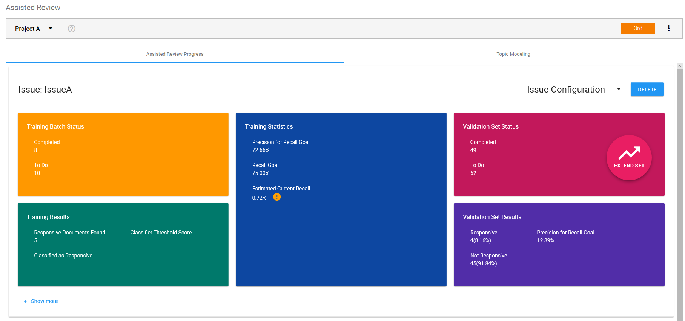

Assisted Review Progress
You can view the progress of your Assisted Review per issue on the Assisted Review Progress tab. This tab gives you a comprehensive view into the state of your Assisted Review project. Review the documentation below to learn more about the various components of this dashboard.

Open the Assisted Review Progress Tab
-
In the navigation panel of ZyLAB One, select Assisted Review.

|

|
Note: You can also access the Assisted Review page by clicking the Assisted Review button on the Matter Home page.

|
-
Select an existing project. If you have not yet created an Assisted Review project, see Create A New Assisted Review Project.
-
The Assisted Review Progress tab opens by default.
Issue Configuration
For each issue, you can view the Issue Configuration. This shows the Initial Training Set (based on a Random Set, a Query, Existing Tagging or created from Topic Modeling) as well as the minimum batch size. If the issue was created from Topic Modeling, the Topic Node ID (associated with the selected topic) is also displayed.

Delete Issue
Select the Delete button to remove an existing issue.
|
|
Note: If an issue is deleted, tags and the training rounds report will be deleted too. Issue information will not be shown in the report.
|
Add New Training Batch
After reviewing your progress, you can add a new training batch.

See Training Set/Batch for more information.
Statistics and Graphs
To view the Statistics and Graphs, select Show More (in the bottom left corner of an issue).
To learn more, see Statistics and Graphs.
Classify Remaining
Select Classify Remaining if finding more responsive documents is not worth the time/cost of manually reviewing more documents, and/or the classifier (i.e. the algorithm that labels documents as responsive or not responsive for an issue) is returning good results (the quality of the classifier is determined based on the results of the statistics and graphs).
Set the Classifier Threshold Score (with a value larger than 0.0 and smaller than 1.0, default threshold is set at 0.5). Only documents with a ranking value higher than (not equal to) the Classifier Threshold Score will be classified and put in the Classification Results (Assisted Review Results field).

See Classifier and Classifier Threshold Score for more information.
Training Batch Status
Completed
Total reviewed documents (Responsive or Not Responsive Assisted Review tag applied) of the Training Batches for this issue.
To Do
Total not yet reviewed documents of the Training Batch for this issue.
|
|
Note: If you request a new training batch, To Do will only be reset and a new training batch will only be calculated when the following conditions for the issue are met:
-
All documents of the initial training set size are reviewed. If not, the request for a new training batch will be ignored. The reviewer has to finish review of the initial training set.
-
The reviewed documents contain at least a Responsive and a Not Responsive document. If not, the Training Batch will be extended, but you will remain in the same training round.
|
Training Results
Responsive Documents Found
Documents with Responsive Assisted Review tag applied, excluding Validation Set.
Classified as Responsive
Documents that are classified as responsive by the last trained classifier. Documents that are classified as responsive are not automatically tagged with Assisted Review tags.
Classifier Threshold Score
The Classifier Threshold Score that was used when selecting Classify Remaining.
Training Statistics
Precision is a measure of result relevancy, while recall is a measure of how many truly responsive results are returned. High scores for both precision and recall show that the classifier is returning accurate results (high precision), as well as returning a majority of all positive results (high recall).
Precision for Recall Goal
Precision value for the user-defined recall goal in Precision by Recall curve on Training Batch.
See Precision by Recall.
Recall Goal
User-defined goal. It is the desired amount (percentage) of responsive documents you want to find in the whole project.
See Recall Goal.
Estimated Current Recall
The estimated current recall is the total number of reviewed responsive documents in the project (including the reviewed responsive documents of the Validation Set) divided by the estimated number of all responsive documents in the project.
See Estimated Current Recall for more information.
Validation Set Status
For information on Validation Sets, see Assisted Review: Validation Set.
Completed
Total reviewed documents (Responsive or Not Responsive Assisted Review tag applied) of the Validation Set for this issue.
To Do
Total not yet reviewed documents of the Validation Set for this issue
Extend Set
It is recommended to review the Validation Set completely before extending it. There is only one Validation Set per project. If you extend the Validation Set for an issue, it will be extended for all issues.
Click Extend Set and click OK. The size of the Validation Set will be extended with 10% of the current Validation Set (with a minimum of 50 documents). Click Extend Set again to add another 10%.
Validation Set Results
Responsive
Documents of the Validation Set with Responsive Assisted Review tag applied.
Not Responsive
Documents of the Validation Set with Not Responsive Assisted Review tag applied.
Precision for Recall Goal
Precision value for the user-defined recall goal in precision recall curve on Validation Set.